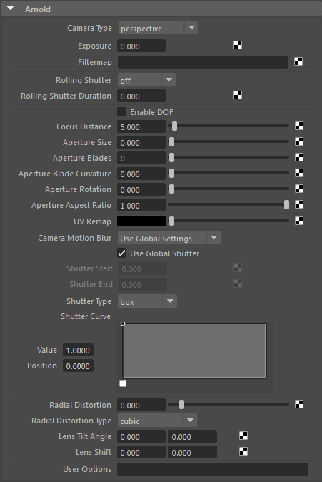

| 请参见《Arnold 用户手册》中的摄影机 |
| 《Arnold for Maya 用户手册》介绍了如何在 Maya 用户界面中设置 Arnold 摄影机。《Arnold 用户手册》提供了有关 Arnold 摄影机的完整文档。 |

透视（也是标准）摄影机最为常用。透视摄影机和鱼眼摄影机可提供景深，并对改动摄影机光圈的效果进行建模。正交、圆柱形和球形摄影机类型有助于创建特定的非透视视图，但请勿尝试对任何真实镜头效果进行建模（它们通常用于创建环境贴图）。
有关演示 rolling_shutter 的场景，请单击此处。
Arnold 提供以下摄影机类型：
此 cyl_camera 节点提供圆柱形视图，对于创建全景视图非常有用。该摄影机投影的一个常见用途是允许创建环境贴图（采用“纬度-经度”格式），供以后用作反射贴图或用于环境照明。
此 fisheye_camera 节点提供鱼眼镜头类型的视图。景深和光圈控件与标准透视摄影机类似，但鱼眼摄影机还提供视野控件。
此 ortho_camera 节点提供正交视图（无透视，因此即便远离摄影机，对象的大小也不会减小）。
此 perp_camera 节点提供透视视图，类似于常规摄影机。这是最常用的“标准”摄影机类型。除了普通透视外，此摄影机类型还提供相应的控件来控制景深和摄影机的焦距，以及摄影机的光圈。利用这些控件可以模拟各种摄影机镜头效果，包括散景。
spherical_camera 是具有球形外观的摄影机镜头。这种摄影机投影的常见用途是创建环境贴图（以球形贴图格式），以便稍后用作反射贴图或用于环境照明。
vr_camera 是一个通用的 VR 摄影机实施。它使用特定的 360º 投影按照一定的距离偏移两个摄影机。